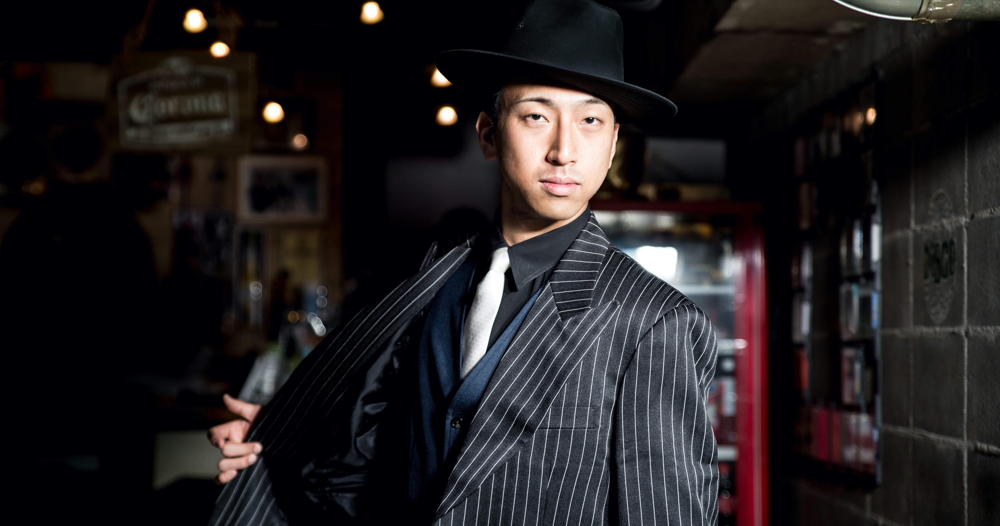
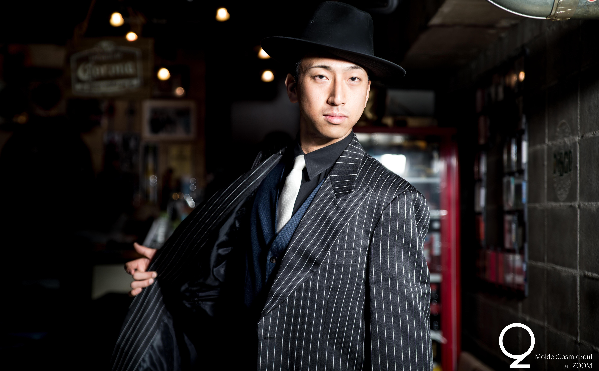
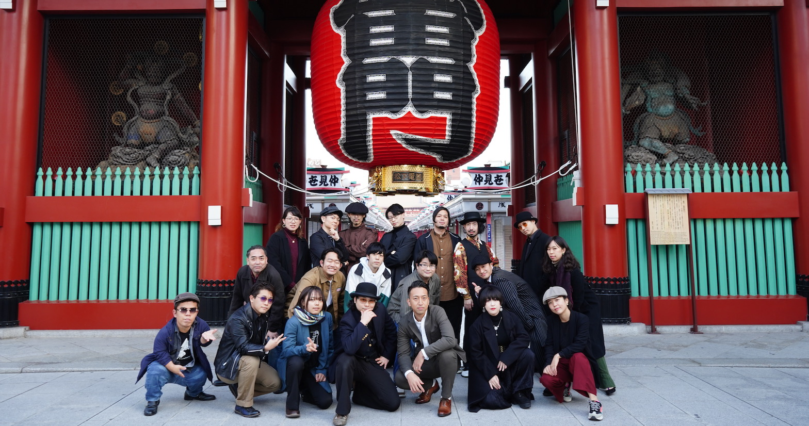
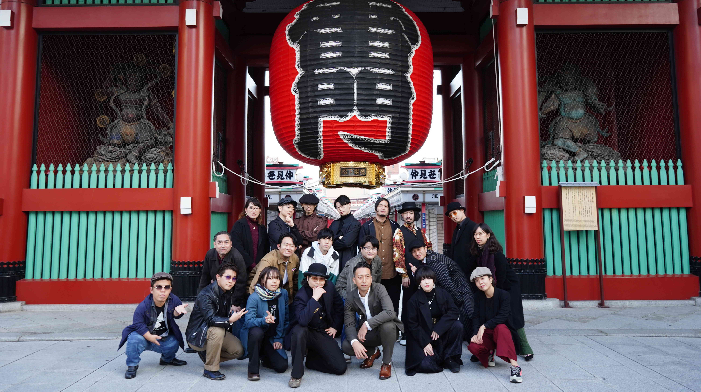

昨今の感染症事情を鑑みまして、細心の注意を払いながら各種レッスン・イベント出演を展開しております。
ご参加される際には、個々人の皆様にも十分な対策のご協力の程、何卒よろしく申し上げます。
横浜発祥の純国産ダンス「フリチャチャ(ハマチャチャ)」を広く普及、多くの仲間と楽しむことを目的に活動している『関東ハマチャチャ同好会』
2016年に発足し、フリチャチャの魅力をさらに伝えるべく日々邁進している。コンセプトは『横浜フリーチャチャが好きな人（または興味がある人）なら誰でも大歓迎』
老若男女多数在籍し、2020年現在では「関東ハマチャチャ同好会」としてのイベント出演数も累計50本を突破。その他にもレッスン・イベント開催など精力的に活動しており、今やその活動は全国各地に波及、「関西」ハマチャチャ同好会も鋭意活動中となっている。
沖縄県那覇市出身。Locking、Soulなどのストリートダンスを得意とし、都内某ディスコ店長としての勤務経験から和製ディスコステップにも広く見聞を有する。
横浜フリーチャチャの伝道師"藤中一郎"氏から、『ICHIRO STYLE』の正式な後継者として認められた唯一のダンサー。現在は関内"TWIN SOULS"にて勤務、日夜ダンスと音楽に心血を注いでいる。ディスコカルチャーをこよなく愛し、より広い世代間で共有できるハマチャチャの魅力を伝えるべく活動中。
 
音楽一家に生まれ、JAZZを中心としたブラックミュージックに触れながら幼少期を過ごす(実弟は某メジャーデビューアーティスト。) 高校時代よりストリートダンスに没頭(国内外受賞歴は100以上)、大学卒業を機に横浜へ移り住み、同藤中一郎氏の運営スクール”FDS”に通い詰め、ハマチャチャを習得。元高校教員でもあり、青年海外協力隊としてアフリカから2020年1月帰国後、普及に向けた活動を加速させている。
 
あいあい/ あづみ/ おかぴ/ かっぱ/ ガレ/ きみどり/ きりん/ けるみん/ こうへい/ こころ/ しんたろう/ たいら/ たかつ/ たすくん/ たるしる/ ばっちゃん/ はと/ ひらり/ ぽん酢/ まねこ/ めいと/ ゆかり/ よしお/ 黒衣/ 紫音/ KODAI/ Kope/ MASA/ O-chan, etc.,
1960年代後半...
米軍駐留地としての面影を残した街、横浜。
最新の音楽やファッション、ダンスが集まる場所…
流行の最先端である踊り場は、当時の若者たちを魅了した。
その内のダンス、男女ペアで踊られる"チャチャ"。
黒人たちの踊る姿に着想を得て8拍子の基本ステップを考案、更に振り付けを加えていき数多くの応用技へと発展を遂げた。
男女ペアで向かい合い、前後のステップを繰り返す形から横並びでのラインダンス、アドリブ感溢れるスタイリッシュな形へ。
それがパートナーとシンクロさせるダンス、横浜フリーチャチャの原型であり、故・小山成光(しげみつ)氏がその第一人者の一人であるとされている。※1
そしてシーンを語るに欠かせないひとつ、横浜ディスコブームを牽引し、伝説と呼ばれた「ファッションディスコ"LINDY(リンディ)"」
フリチャチャの名手と呼ばれる存在を数多く輩出し、今でも語り継がれる元従業員、関係者は少なくない。同店でも当時フリチャチャは大変な人気を誇った。※2
"LINDY"元店長・藤中一郎氏においては、現在のストリートダンスシーンにも活躍の幅を広げており、フリチャチャを自身のスタイルへと昇華しながらスクール(FDS)、WSなどを通して普及を続けている。事実、藤中氏に師事しフリチャチャを学ぶダンサーは全国的に存在。
関東ハマチャチャ同好会の代表、副代表もまた藤中一郎氏に支持するダンサーの一人である。
※1.自然発生的な広がりを見せたカルチャーであり、誰が・いつ・どこでを史実考証することが難しいため第一人者、考案者に関しては諸説あることを前提とする。ここではそのうちの一つとして、小山氏のお名前をご紹介とさせていただく。
※2
当時数多くのディスコがあり、リンディ以外のフリチャチャシーンも間違いなく存在するが、すべての名前を紹介することは叶わずここでは割愛とさせていただく。
足を手でタップする、ハマチャチャの花形的バリエーション。
ひし形を描きながら回転するも、初心者さんでも簡単にできるバリエーション。
９０度ずつその場で回る、ベースステップの前４つを用いるターン形バリエーション。
藤中一郎氏主催のスクール
www.facebook.com/yokohama.fds/藤中一郎氏が店長を勤める、ハマチャチャが踊れるバー
www.facebook.com/TwinSoulsYokohama/イベント・ショーケースはもちろん、様々な催し物から、振り付け等のご依頼にも対応可能です。
ご気軽にお問合せ下さい。